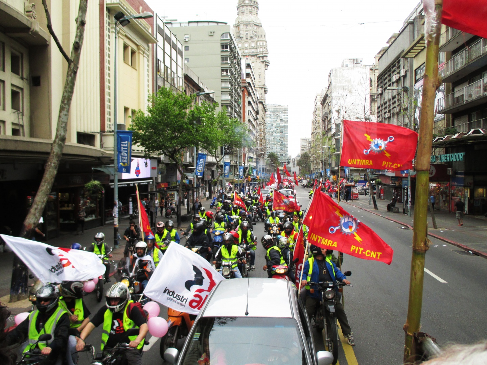

Uruguay
Work and enjoyment may seem like polar opposites. Yet, Uruguay’s Constitution guarantees its population the right to be protected in their enjoyment of their lives, honor, liberty, safety, work, and property.
Uruguay has one of the lowest poverty rates in the world, with 98.81% of its working population making more than $5.50 per day (the international poverty line) and 89.4% of its total population above the national poverty line, according to the ILO and the World Bank. But this was not always the case in Uruguay: just 15 years earlier, in 2006, almost a third of the country was below its national poverty line.
After structural reforms in the 1990s led to less government regulation in the labor market, Uruguay’s banking crisis in 1999 left most workers without recourse for worsening compensation rates and working conditions, leading to higher poverty rates overall. Beginning in 2005, however, the newly-elected Frente Amplio-Encuentro Progresista coalition established a consultative process which worked with civil society organizations, including labor unions, to establish social programs and improve economic growth.
Thus, alongside steep improvements in labor rights, in the past decade, Uruguay has seen improvement in human rights as a whole, with individuals on average having better access to education, healthcare, social security, and housing due to the implementation of more comprehensive social programs. These social programs and developments, coupled with reduction of inflation and economic development, contributed to the country’s drastic reduction in working poverty, and poverty as a whole. The labor rights efforts did not stop there, however: today, Uruguayan labor rights organizations are continuing to advocate to reduce the gender pay gap to improve gendered labor rights.
On the global scale, however, Uruguay demonstrates how giving workers the tools to advocate for better rights can contribute to both lower poverty rates and economic growth. Uruguay’s success in reducing poverty after committing to workers’ rights shows the importance of assigning cultural value to human rights.